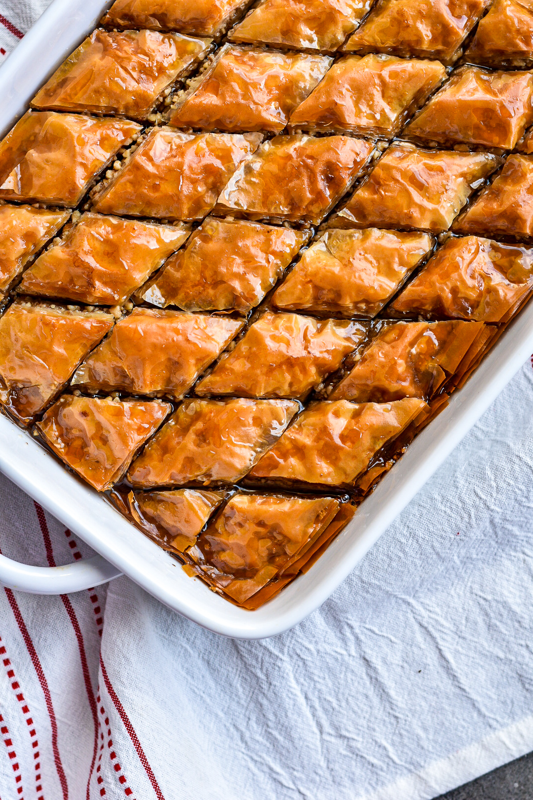

Baklava

Baklava is a layered pastry dessert made of filo pastry,
filled with chopped nuts, and sweetened with syrup or honey.
It was one of the most popular sweet pastries of Ottoman cuisine.
Ingredients for Filo Dough
- 6 cups ( 900g) all-purpose flour
- 1.5 cups (372g) hot water
- 2 teaspoons (23g) white vinegar
- juice of 1 lemon
- 1 tbsp (10g) olive oil
Ingredients for Baklava
- 25 sheets filo
- 2 3/4 cup (246g)walnuts
- 1/2 tsp (4g) fine sea salt
- 1 tablespoon (8g) cinnamon powder
- 1 teaspoon (2g) allspice
- 1/4 teaspoon fresh grated nutmeg
- 350g butter, melted
- 1/2 cup (97g) sugar
- 1 cup (110g) water /li>
- 1 cup (282g) honey
- 1 cinnamon stick
Instructions for Filo Dough
-
In a large bowl, place the flour, make a “well,” add the hot water, white vinegar, lemon juice, and olive oil.
Mix well by hand until you get a shaggy dough, then knead your dough for five minutes or until smooth.
-
Wrap in plastic, and let it rest for fifteen minutes.
Divide your dough into twenty-five pieces evenly. Using the pasta maker attachment, roll your dough as thin as possible while generously flouring until you see your hand.
Repeat this process with the remaining dough pieces.
Instructions for Filo Dough
- Preheat oven to 400F
- In a baking dish (9” x 13”), brush the bottom with butter or ghee, add one sheet of filo pastry, brush it with butter, add one sheet of filo, brush it, and repeat this process until you get a 14 layer filo pastry.
- In a food processor, add the walnuts and pulse them multiple times until they break up nicely, but this time, we want them finer; add the cinnamon, allspice, and a touch of freshly grated nutmeg. Mix it well.
- In a baking dish (9” x 13”), brush the bottom with melted butter (not hot) or ghee, add one sheet of filo, brush it with butter or ghee, add one sheet of filo, brush it, and repeat this process until you get a 14 layer filo paste.
- Add the walnuts, flick some of the butter, place one layer of filo dough, brush it, and repeat until you get 14 layers of dough.
- Cut to the bottom into rectangles with a knife. Bake for 30 - 35 min.
- Add the sugar, water, a pinch of sea salt, a cinnamon stick, orange peel, and honey in a saucepot. Bring it to a boil over medium-high, reduce to medium and reduce for 5 to 7 minutes or until it reaches a light syrup consistency. Once the Baklava is ready, pour all the syrup on top and place, on a wire rack to cool down completely.